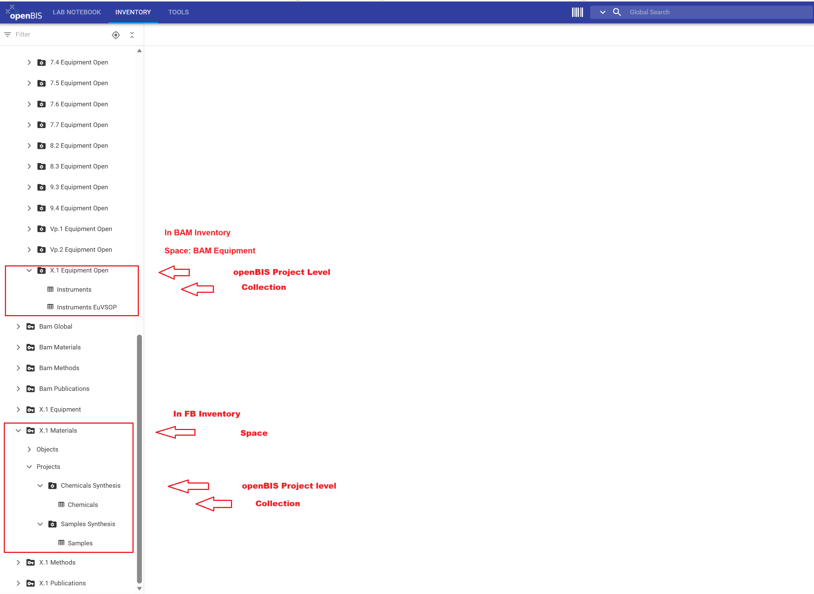
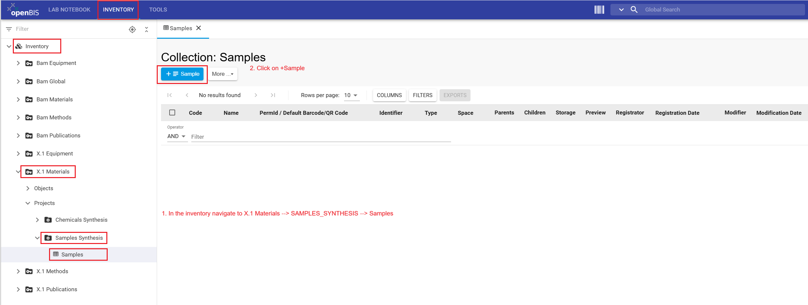
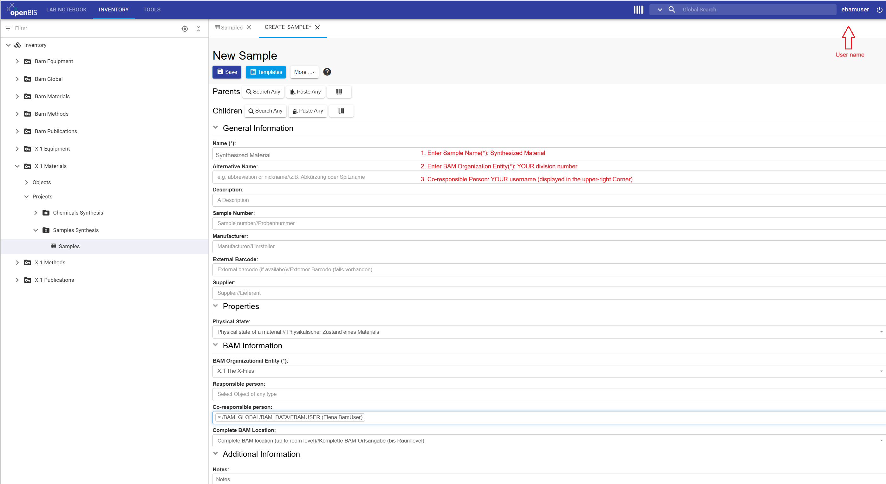
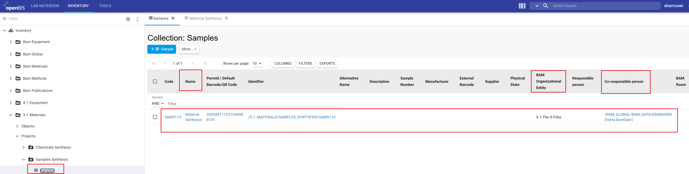
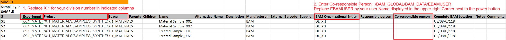
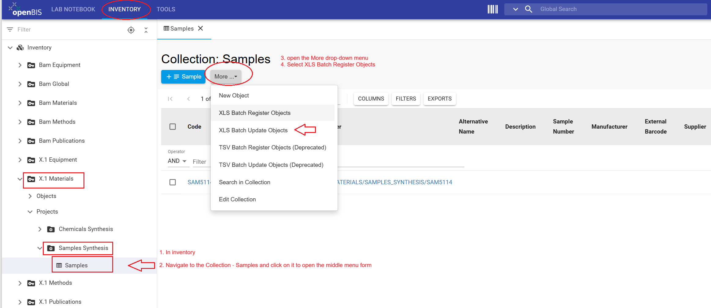
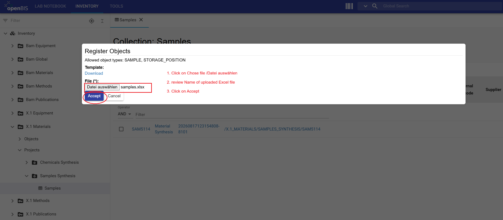
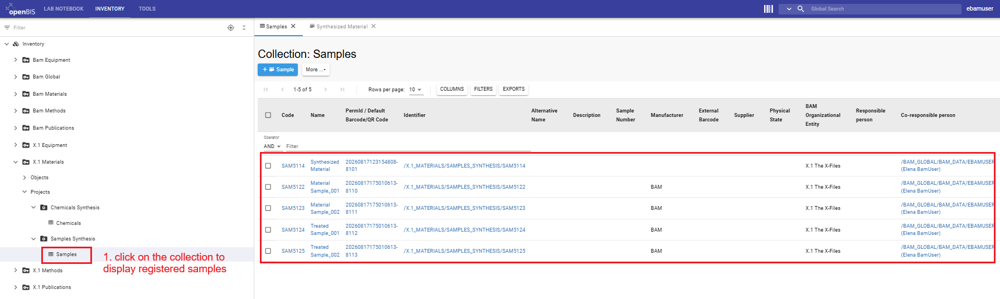

This tutorial shows division members who have been assigned the
User role in the Data Store how to register inventory
objects used in the synthetic “Material Synthesis” example. You will
review the inventory structure prepared by Data Store Stewards, register
one Sample manually, and batch-register additional samples in the
FB Inventory.
What you will learn
Locate inventory projects, collections, and objects prepared by Data Store Stewards.
Distinguish division-specific resources in the BAM Inventory from those in the FB Inventory.
Register one Sample and identify (#?) yourself as the co-responsible person.
Batch-register Sample objects using an Excel file.
Distinguish an Excel file for batch registration from one used for batch update.
Before you begin
This tutorial requires no prior experience with openBIS and is designed for openBIS version 20.10.12. Before you begin, make sure that all inventory entities such as projects and collections have already been prepared by a Data Store
Stewards of your division.
As a division member, you have the User role in the inventory spaces and projects. When in doubt, follow this Wiki how-to guide to display your roles and rights in spaces and projects.
If you encounter problems, contact the Data Store team
Key concepts
Inventory
The Inventory sections of the Data Store are FB Inventory and BAM Inventory. By default, objects in the FB Inventory are available to the relevant division. Access can also be granted to collaborators from other divisions at the space or project level. Objects in the BAM Inventory are visible and accessible for all BAM members with access to the Data Store.
Each division has four FB Inventory spaces: Equipment, Materials, Methods, and Publications. These spaces are named using the division number, for example, X.1 Equipment and X.1 Materials, etc. The BAM Inventory contains spaces such as BAM Equipment,BAM Materials, etc. Within these spaces, each division has a predefined project, such as X.1 Equipment Open, X.1 Materials, etc. The Data Store Stewards of each division have prepared the inventory entities such as projects and collections to support the registration of objects in this tutorial.
Inventory spaces organize tangible and intangible items and resources used or generated during the research, for example, instruments, chemicals, samples, software, and standard operating procedures (SOPs). Note that within the Inventory, you find a space and project called Publications.The use of it is optional and does not replace the purpose of the BAM database Publica to store publications and their metadata.
What should be registered?
Not every item or resource used needs to be registered in the Inventory. Register first only items whose metadata is needed to understand, trace, or reproduce the resulting research data.
pAlso it is recommended to register instruments metadata such as calibration date, etc. especially if they are used in standardization processes that require certification and evaluation. Such instruments need to be registered and linked to experimental steps. These connections are established through user-defined openBIS parent-child relationships.
Tutorial workflow
Review the objects registered by Data Store Stewards in the BAM and FB Inventories.
Register one Sample in the SAMPLES_SYNTHESIS project and enter your username as the co-responsible person.
Modify the provided Excel file and batch-register additional Samples in the SAMPLES_SYNTHESIS project.
Step 1: Review registered objects in the BAM and FB Inventories
Before registering Samples, review the inventory entities registered by Data Store Stewards for the “Material Synthesis” example. In this tutorial, X.1 represents your division number. Replace it with the
number of your division. If a required project or collection is missing, contact your Data Store Stewards.
Inventory
Space
Project code
Collection name
Object type
Object name
BAM Inventory
BAM Equipment
X.1_EQUIPMENT_OPEN
Instruments
Instrument
Synthesis
Macrostructure
Microstructure
FB Inventory
X.1 Materials
CHEMICALS_SYNTHESIS
Chemicals
Chemical
Chemical 1
Chemical 2
Treatment Solution
FB Inventory
X.1 Materials
SAMPLES_SYNTHESIS
Samples
Sample
None
Instructions on how to display registered objects
Select the upper INVENTORY tab.
In the left-hand navigation menu, open Inventory drop-down and navigate to BAM Equipment → X.1 Equipment Open → Instruments.
Collection: Instruments form with all registered instruments objects will be displayed.
Review the name of the registered instrument objects.
Scroll down to and navigate to X.1 Materials → Chemicals Synthesis → Chemicals.
Collection: Chemicals form with all registered chemical objects will be displayed.
Review the names of the registered chemical objects.
Navigate to X.1 Materials → Samples Synthesis → Samples.
Collection: Samples form will be displayed.
The Samples collection is empty and the blue + Sample button (with predefined object type) is available next More drop-down menu.
The Data Store contains two Inventory sections: BAM Inventory and the FB Inventory. Select the upper INVENTORY tab, and use the
Inventory drop-down menus in the left main menu to browse their contents.
The BAM Equipment space contains a predefined project for each division, such as X.1 Equipment Open. Use the corresponding division project to register large devices and instruments shared by multiple divisions.

The predefined structure of BAM and FB Inventories. Division members will register Samples in X.1 Materials → Samples Synthesis → Samples.
Access note: Objects registered in BAM Inventory are visible and accessible to all BAM members with access to the Data Store. Objects registered in FB Inventory are visible to division members and collaborators with access to the corresponding space or project. Editing collections,objects, and their metadata accessible only if you have been assigned the User role in the corresponding space or project. As a division member, you have the User role in the BAM and FB inventory projects. Note that creation of new projects in the FB inventory can be done only by the Data Store Stewards, by default. If you encounter any access restrictions, please contact the Data Store Stewards assigned for your division.
Register one Sample in the Samples
collection. Enter your BAM username in the
Co-responsible person property so that other users can
identify who registers and shares responsibility for the Sample.
Instructions on how to register an object (object type: Sample):
Navigate to X.1 Materials → Samples Synthesis → Samples.
Click the + Sample button.
Object form with object type specific properties (metadata fields) will open.
Enter the name: Synthesized Material
Following the table below, complete mandatory (*) properties. Replace X.1 with your division number.
In the object form, in the Co-responsible person field, start typing your username and select the matching entry. After selection, openBIS will displays the complete object path /BAM_GLOBAL/BAM_DATA/USERNAME.
Review the information and click Save.
Reload the browser page to confirm that the Synthesized Material sample is successfully registered.
Sample naming convention:
It is recommended to use the naming convention agreed upon within your division. Use a documented naming convention that allows every object of type Sample or other to be identified
unambiguously within your and across collaborating divisions. Apply the selected formats consistently. Do not rely on the
registrator, co-responsible person property alone as to a way to identify the sample. Properties such as Sample number, Alternative name, Description, etc. can provide additional information.
Inventory
Space
Project
Collection name
Object type
Object name
BAM organizational entity(*)
Co-responsible person
FB Inventory
X.1 Materials
Samples Synthesis
Samples
Sample
Synthesized Material
X.1
your username

Navigate to X.1 Materials → Samples Synthesis → Samples and click on the + Sample button.

Fill out the New Sample object form as shown. All mandatory (*)
properties must contain a value to be able to save the object form.

The registered Sample is displayed once you click the
Samples collection. Note that the columns correspond to the sample properties and your username should
be listed in the Co-responsible person field.
Congratulations, you have successfully registered one sample in the FB Inventory.
Use the provided Excel file to register multiple samples in one
operation. Before start, open Excel file and for each sample you want to register, enter your username in the
Co-responsible person column in following format: /BAM_GLOBAL/BAM_DATA/USERNAME. Replace all occurrences of X.1 with your division number.
Batch registration creates new objects; it does not update already existing onces.
Instructions on how to prepare the Excel file for batch registration:
Download samples.xlsx.
Open the file and review the objects.
In the Excel file, replace all occurrences of X.1 with your division number.
In the Co-responsible person column, enter your username in the following format:
/BAM_GLOBAL/BAM_DATA/USERNAME.
Do not change the column headings, object type information, or worksheet structure.
Save the modified Excel file under a clear filename, for example samples_FB_material_synthesis.xlsx.
Terminology in Excel files:
Because of an unresolved terminology issue in openBIS 20.10.12, generated
and exported Excel files use labels that differ from those in the current
openBIS user interface:
Experiment corresponds to a
collection.
Sample Type corresponds to an
object type.
Mandatory properties (*):
Successful batch registration requires values to be filled in all mandatory properties fields.
However, the Excel template generated by openBIS does not indicate which
properties are mandatory (*). Before completing the template, follow the guide
on
how to identify mandatory properties of an object type
.

In the Excel file provided in this tutorial, values in the mandatory properties fields have already been entered. Review these values and
replace the division number and username, before uploading the file.

Navigate to X.1 Materials → Sample Synthesis → Samples. Open the More drop-down menu and choose XLS Batch Register Objects.

Click Datei auswählen/choose file, select the updated Excel file samples_FB_material_synthesis.xlsx, and click Accept.
When an Excel file is not provided, you can use the Template: download option to retrieve a blank Excel.

: The registered Samples are displayed once you click on the Samples collection.
Congratulations, you have registered a total of five samples.
In a separate tutorial, you will link these samples to the Lab Notebook and other inventory items and complete the tutorial example.
General information: Prepare Excel files for batch registration and batch update
Batch registration and batch update are different operations and require
differently prepared Excel files. In this tutorial you used the batch registration to register samples. In a follow-up tutorial, you will batch-update all samples registered in this tutorial to
define their parent-child connections and complete representation of the workflow you started in the Lab Notebook (ELN) tutorial.
Batch registration versus batch update: Use batch registration only to create new
objects. If an object from the Excel file already exists, stop and use
the batch-update procedure.
Comparison of batch registration and batch update
Operation
Purpose
Obtain the Excel file
Prepare and upload the Excel file
Batch registration
Create new objects
Navigate to the collection in which you want to register the
objects.
Select
More → XLS Batch Register Objects.
Under Template, click
Download to download the Excel template for
the configured object type (see .
Edit only the property values that need to be updated.
Do not modify object identifiers, codes, column headings, or
the worksheet structure.
Save the updated Excel file.
Return to the collection and select
More → XLS Batch Update Objects.
Upload the updated file, verify the filename, and click
Accept.
Batch registration note: Never use a batch registration file to update
existing objects. The exact names of the export and batch-update commands
may depend on the configured openBIS interface. If the required commands
are not displayed, contact your Data Store Steward before changing any
existing objects.
Result
After completing this tutorial, you should be able to locate
inventory objects, register individual objects, enter and modify property values such as your username,
batch-register multiple objects using an Excel file, and explain the difference between batch registration and batch update.